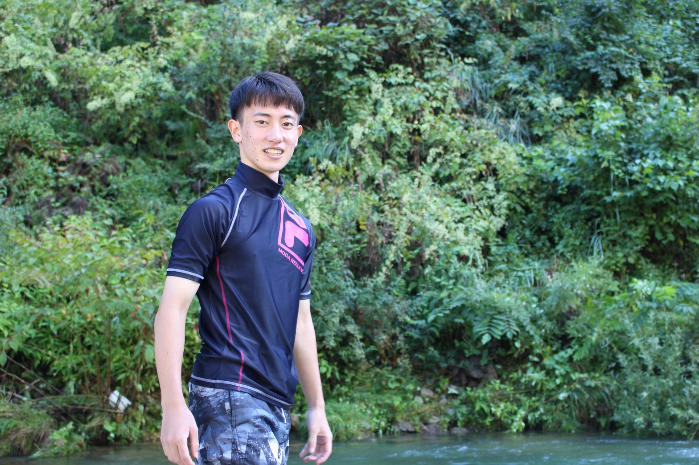

HIROTO
This is my first portfolio
Profile

小林大斗
Kobayashi Hiroto
愛知県出身の文系大学生です
地方で一人暮らしをしています
My hobby
読書
高校二年生の秋ごろから小説を中心に読書をするようになりました。 今は忙しくてあまり読む時間がありませんが、おすすめの本があったらぜひ教えて下さい。
スポーツ観戦
小学生のころからサッカーをしていましたが、今では自分でやるよりも見るほうが好きです。 地元が名古屋なので、一番好きなチームは名古屋グランパスです。
ラジオ
もともとバナナマンが好きだったことがきっかけで、ラジオを聞き始めました。 今では三つほどの番組を中心に毎週聞いています。
Vision
将来の夢はフルスタックなエンジニアになること
僕は今まで、将来についての想像があまりできませんでした。
特にやりたいこともない、ましてや将来の夢なんて...
しかしながら大学生になってプログラミングと出会い、
WEBエンジニアという職業を知りました。
最後の大会はベンチ外、受験は第一志望落ち
そんな僕だけど今度こそは達成して見せます。
そして日本中の、いや世界中の人達が利用するようなサービスの開発に携わりたいです。
この夢を現実にできるように頑張ります！